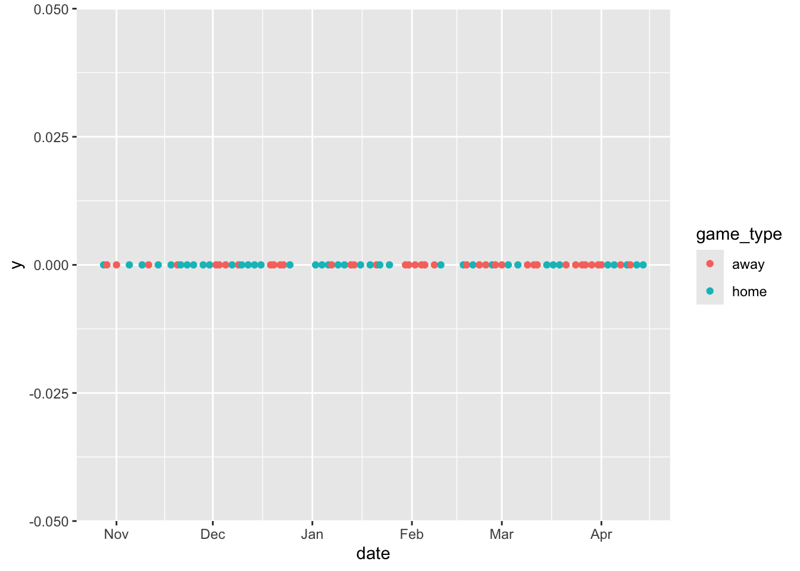
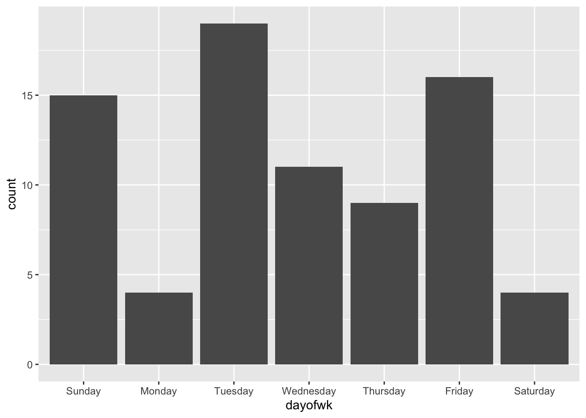
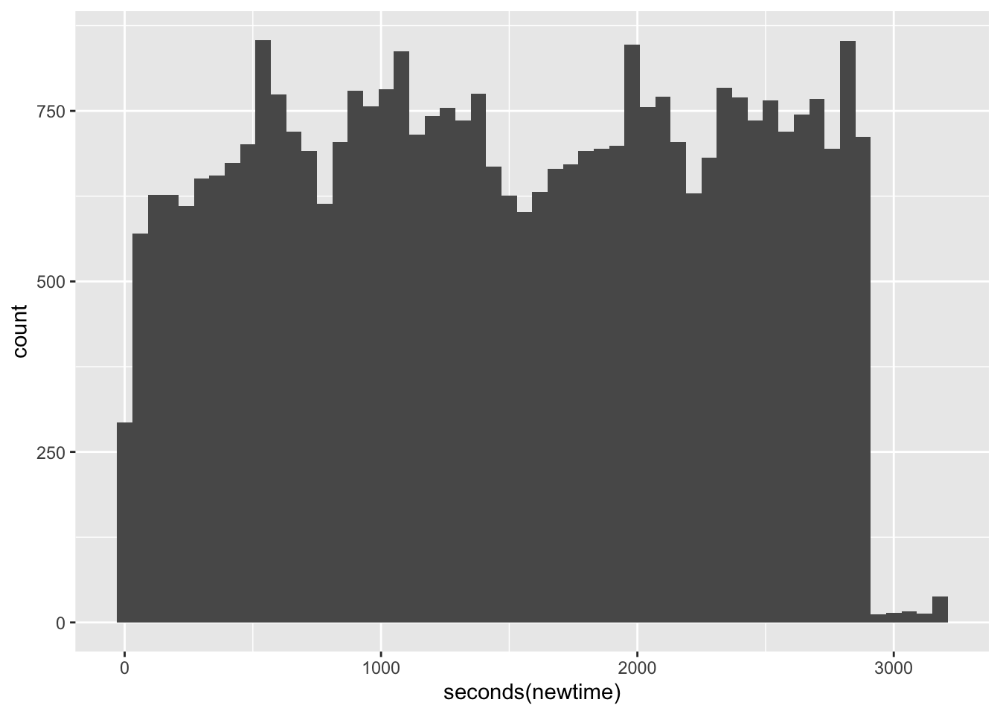
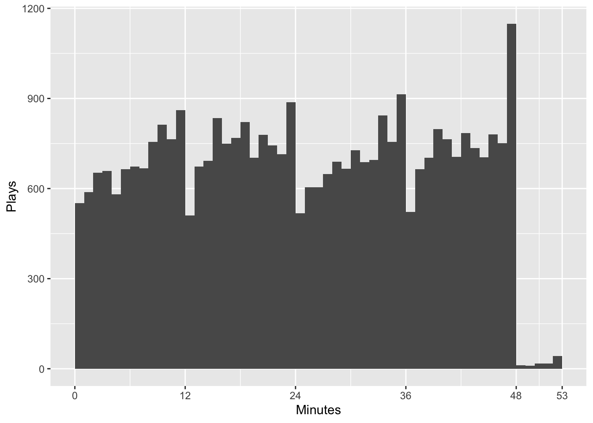
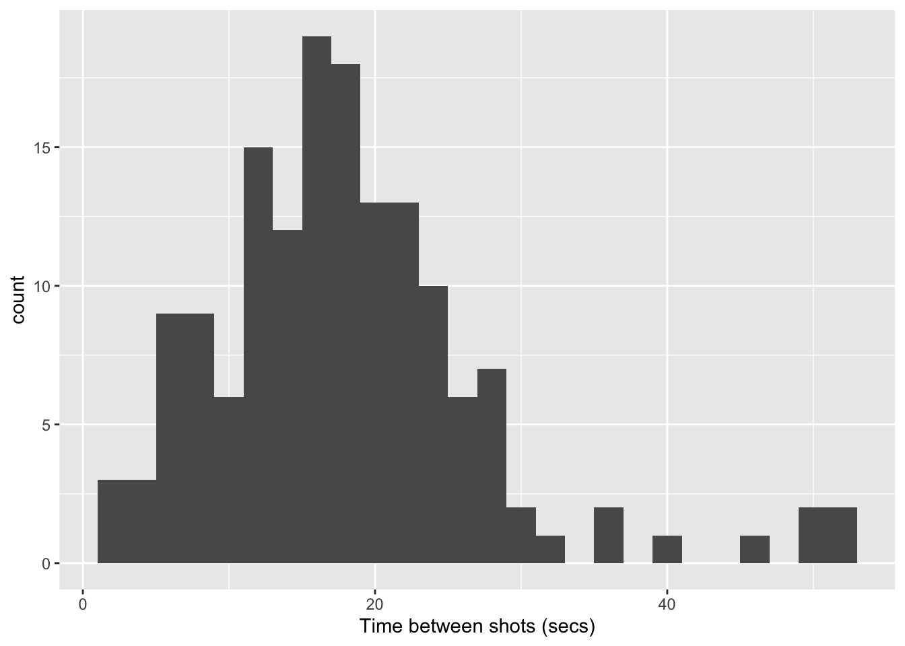
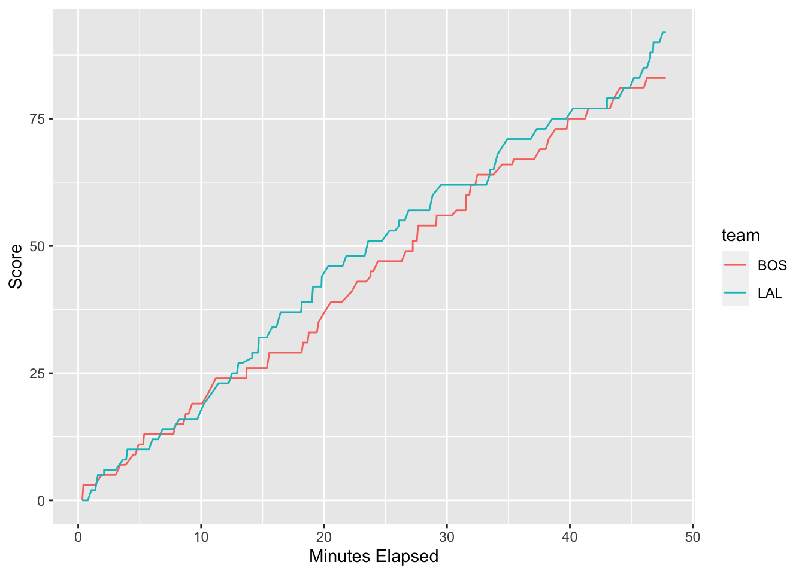

(date <- ymd("2026-01-01"))[1] "2026-01-01"Chapter 17
Let’s get to know some of the commands in lubridate to calculate the dates of holidays. Some holidays like Thanksgiving and Memorial Day do not occur on the same date each year. We will use lubridate to find the date on which Thanksgiving will fall in the year 2026
First, note that Thanksgiving in the US is celebrated on the fourth Thursday of November. Let’s start by getting a representation of the first day of 2026.
(date <- ymd("2026-01-01"))[1] "2026-01-01"Now add 10 months using the period function month() or directly set the date to November:
(date <- date + months(10))[1] "2026-11-01"Now check which day of the week November 1st is:
wday(date, label = TRUE, abbr = FALSE)[1] Sunday
7 Levels: Sunday < Monday < Tuesday < Wednesday < Thursday < ... < SaturdayThis implies November 5th will be the first Thursday of November.
(date <- date + days(4))[1] "2026-11-05"Next, we add three weeks to get to the fourth Thursday in November, which will be Thanksgiving:
(date <- date + weeks(3))[1] "2026-11-26"Follow the steps above to find the date for Thanksgiving in the year 2030.
The lakers data set contains play by play statistics of every NBA regular season basketball game played by the Los Angeles Lakers during the 2008-09 season. This data set accompanies the lubridate package so there is no need to import it from an external source. (Note: The data were originally sourced from http://www.basketballgeek.com/data ). But for convenience, the following code chunk converts it into a tibble.
# The following command is useful if you need to re-run all commands during troubleshooting
# It removes previous versions of **lakers** from the local environment
rm(lakers)Warning in rm(lakers): object 'lakers' not found# Convert the data set to a tibble for convenience
lakers <- as_tibble(lakers) Use the View() command to look at the data set. For background, NBA teams play 82 games per year, typically half of which are “at home” and half are away. A regular game has 48 minutes split into 4 periods of 12 minutes each. Overtime periods, if required by a tie at the end of 48 minutes, are each 5 minutes in length.
This tutorial uses the lubridate functions to explore the distribution of Lakers’ games throughout the year and the distributions of plays within games. Each case (observation) is an individual “play” which includes everything from a “jump ball” at the beginning of the game to a “rebound” or “shot”. You can use glimpse() to look at the variables but the Appendix has a list of the names with a brief description of each.
You will see that the lakers data set has a variable date that records the date of each game. Note from the output of glimpse() that R recognizes the dates in this format as integers:
glimpse(lakers)Rows: 34,624
Columns: 13
$ date <int> 20081028, 20081028, 20081028, 20081028, 20081028, 20081028, …
$ opponent <chr> "POR", "POR", "POR", "POR", "POR", "POR", "POR", "POR", "POR…
$ game_type <chr> "home", "home", "home", "home", "home", "home", "home", "hom…
$ time <chr> "12:00", "11:39", "11:37", "11:25", "11:23", "11:22", "11:22…
$ period <int> 1, 1, 1, 1, 1, 1, 1, 1, 1, 1, 1, 1, 1, 1, 1, 1, 1, 1, 1, 1, …
$ etype <chr> "jump ball", "shot", "rebound", "shot", "rebound", "shot", "…
$ team <chr> "OFF", "LAL", "LAL", "LAL", "LAL", "LAL", "POR", "LAL", "LAL…
$ player <chr> "", "Pau Gasol", "Vladimir Radmanovic", "Derek Fisher", "Pau…
$ result <chr> "", "missed", "", "missed", "", "made", "", "made", "", "mad…
$ points <int> 0, 0, 0, 0, 0, 2, 0, 1, 0, 2, 2, 0, 0, 2, 2, 0, 0, 2, 0, 0, …
$ type <chr> "", "hook", "off", "layup", "off", "hook", "shooting", "", "…
$ x <int> NA, 23, NA, 25, NA, 25, NA, NA, NA, 36, 30, 34, NA, 15, 46, …
$ y <int> NA, 13, NA, 6, NA, 10, NA, NA, NA, 21, 21, 10, NA, 17, 9, 10…We can use the lubridate function to parse the dates into date-time objects:
lakers <- mutate(lakers, date = ymd(date))
head(lakers)# A tibble: 6 × 13
date opponent game_type time period etype team player result points
<date> <chr> <chr> <chr> <int> <chr> <chr> <chr> <chr> <int>
1 2008-10-28 POR home 12:00 1 jump ba… OFF "" "" 0
2 2008-10-28 POR home 11:39 1 shot LAL "Pau … "miss… 0
3 2008-10-28 POR home 11:37 1 rebound LAL "Vlad… "" 0
4 2008-10-28 POR home 11:25 1 shot LAL "Dere… "miss… 0
5 2008-10-28 POR home 11:23 1 rebound LAL "Pau … "" 0
6 2008-10-28 POR home 11:22 1 shot LAL "Pau … "made" 2
# ℹ 3 more variables: type <chr>, x <int>, y <int>R now recognizes the dates as date-time-objects so that we can plot them as dates which will be correctly displayed. One useful first step is to plot the games over times and flag them as home or away:
# Don't worry about the y-scale
lakers |> distinct(date, game_type) |>
ggplot(aes(x = date, y = 0, color = game_type)) +
geom_point()
We can see that home and away games tend to cluster in streaks rather than alternating every other game. We see breaks around the holiday season and for the all-star game in February. The tick marks and breaks are automatically generated.
Lets consider how the games are distributed throughout the week. That is, are games equally likely to be played on any day of the week or are some more likely than others? Use the lubridate function wday() to obtain the day of the week of each game.
lakers |>
distinct(date) |>
mutate(dayofwk = wday(date, label = TRUE, abbr = FALSE)) |>
ggplot(aes(x = dayofwk)) +
geom_bar()
On which day of the week is the largest number of games played? On which two days are the least number of games played?
Answer:
Repeat the analysis above but instead of day of week, look at the month of the game. You should be able to adapt the code above but use the month() function without abbreviation. Put the months in order of the season which runs from October to April. Hint: You will probably need to explicitly declare the month of the game as a factor for the appropriate fct_xxx() reordering command to work. In which month(s) did the Lakers play the most/least games?
Answer:
Now let’s look at the play level data to see how the the plays are distributed throughout the game. The lakers data set lists as time the time that appears on the game clock for each play. These times begin at the beginning of the period (at 12:00) and count down to 00:00 at the end of the period. The first two digits show the minutes remaining while the last two digits show the number of seconds remaining.
As the data were loaded, they are stored simply as character data and have not yet been parsed as times or date-times. It would be difficult to record the time data as a date-time object so use ms() to parse it to a period object.
lakers <- lakers |>
mutate(time = (ms(time)))
head(lakers)# A tibble: 6 × 13
date opponent game_type time period etype team player result points
<date> <chr> <chr> <Period> <int> <chr> <chr> <chr> <chr> <int>
1 2008-10-28 POR home 12M 0S 1 jump… OFF "" "" 0
2 2008-10-28 POR home 11M 39S 1 shot LAL "Pau … "miss… 0
3 2008-10-28 POR home 11M 37S 1 rebo… LAL "Vlad… "" 0
4 2008-10-28 POR home 11M 25S 1 shot LAL "Dere… "miss… 0
5 2008-10-28 POR home 11M 23S 1 rebo… LAL "Pau … "" 0
6 2008-10-28 POR home 11M 22S 1 shot LAL "Pau … "made" 2
# ℹ 3 more variables: type <chr>, x <int>, y <int>Since time here is represented in minutes and seconds, it’s difficult to deal with. Instead, we should convert our time periods to durations which have exact lengths in seconds.
lakers <- lakers |>
mutate(time = as.duration(time))
tail(lakers)# A tibble: 6 × 13
date opponent game_type time period etype team player result points
<date> <chr> <chr> <Durati> <int> <chr> <chr> <chr> <chr> <int>
1 2009-04-14 UTA home 42s 4 foul LAL Luke … "" 0
2 2009-04-14 UTA home 42s 4 free… UTA Kyle … "made" 1
3 2009-04-14 UTA home 42s 4 free… UTA Kyle … "made" 1
4 2009-04-14 UTA home 27s 4 turn… LAL Andre… "" 0
5 2009-04-14 UTA home 21s 4 shot UTA Kyle … "miss… 0
6 2009-04-14 UTA home 20s 4 rebo… LAL Luke … "" 0
# ℹ 3 more variables: type <chr>, x <int>, y <int>See how the representation of time has changed? Unfortunately, ggplot2 will not plot a histogram of durations so we need to convert time to a period for plotting purposes. (This appears to be something of a bug since earlier work on lubridate suggests this should be possible.)
For the current analysis, it will be useful to proceed to construct a variable that represents the amount of time elapsed in the game beginning at 0 and extending to the end of the game, up to 48 minutes for a regular length game or 53 minutes for an overtime game. At the start of each period, the game clocks counts down from 12:00. To calculate how much play time elapses before each play, we subtract the time that appears on the game clock from a duration of 12, 24, 36, 48, or 53 minutes (depending on the period of play). We now have a new duration that shows exactly how far into the game each play occurred. You may need to study the code to understand how it’s working. It uses case_when() to grab the number of minutes corresponding to the period.
lakers <- lakers |>
# See case_when() in Section 12 of RDS
mutate(newtime = case_when(
period == 1 ~ dminutes(12) - time,
period == 2 ~ dminutes(24) - time,
period == 3 ~ dminutes(36) - time,
period == 4 ~ dminutes(48) - time,
period == 5 ~ dminutes(53) - time # Allow for overtime
)
)
str(lakers$newtime)Formal class 'Duration' [package "lubridate"] with 1 slot
..@ .Data: num [1:34624] 0 21 23 35 37 38 38 38 60 67 ...head(lakers)# A tibble: 6 × 14
date opponent game_type time period etype team player
<date> <chr> <chr> <Duration> <int> <chr> <chr> <chr>
1 2008-10-28 POR home 720s (~12 minutes) 1 jump … OFF ""
2 2008-10-28 POR home 699s (~11.65 minutes) 1 shot LAL "Pau …
3 2008-10-28 POR home 697s (~11.62 minutes) 1 rebou… LAL "Vlad…
4 2008-10-28 POR home 685s (~11.42 minutes) 1 shot LAL "Dere…
5 2008-10-28 POR home 683s (~11.38 minutes) 1 rebou… LAL "Pau …
6 2008-10-28 POR home 682s (~11.37 minutes) 1 shot LAL "Pau …
# ℹ 6 more variables: result <chr>, points <int>, type <chr>, x <int>, y <int>,
# newtime <Duration>tail(lakers)# A tibble: 6 × 14
date opponent game_type time period etype team player result points
<date> <chr> <chr> <Durati> <int> <chr> <chr> <chr> <chr> <int>
1 2009-04-14 UTA home 42s 4 foul LAL Luke … "" 0
2 2009-04-14 UTA home 42s 4 free… UTA Kyle … "made" 1
3 2009-04-14 UTA home 42s 4 free… UTA Kyle … "made" 1
4 2009-04-14 UTA home 27s 4 turn… LAL Andre… "" 0
5 2009-04-14 UTA home 21s 4 shot UTA Kyle … "miss… 0
6 2009-04-14 UTA home 20s 4 rebo… LAL Luke … "" 0
# ℹ 4 more variables: type <chr>, x <int>, y <int>, newtime <Duration>Now graph the number of plays by time period. We can use the seconds() command to access seconds from the duration newtime.
lakers |>
ggplot(aes(x = seconds(newtime))) +
geom_histogram(binwidth = 60)
We can get an easier to interpret graph by converting to minutes remembering that NBA quarters last 12 minutes.
lakers |>
ggplot(aes(x = seconds(newtime)/60)) +
geom_histogram(breaks = 0:53) +
scale_x_continuous(breaks = c(0, 12, 24, 36, 48, 53)) +
labs(x = "Minutes", y = "Plays")
We see that the number of plays peaks within each of the four periods and then drops at the beginning of each new period. The most plays occur in the last minute of the game. We may suspect that desperation shots and strategic fouling result in the large number of plays at the end of the game. Far fewer plays occur in overtime since only a small portion of all games go to overtime.
Now let’s see how we could look at just a single game, the game played against the Boston Celtics on Christmas of 2008. We can quickly model the amounts of time that occurred between each shot attempt.
# Filter for the game of interest
game1 <- lakers |>
filter(date == ymd("20081225"))
# Filter for plays involving shot attempts and compute the time between shots using
# the lag function and the newtime duration variable. Remember that duration represents
# the cumulative time in seconds within the game at which the shot took place.
attempts <- game1 |>
filter(etype == "shot") |>
mutate(wait = newtime-lag(newtime))With the data set attempts containing the duration variable wait, we can plot a histogram of time between shots using the seconds() function to access the seconds component. Use a reasonable binwidth to get a detailed picture of the histogram.
ggplot(attempts) +
geom_histogram(aes(x = seconds(wait)), binwidth = 2) +
labs(x = "Time between shots (secs)")Warning: Removed 1 row containing non-finite outside the scale range
(`stat_bin()`).
Rarely did more than 30 seconds go by without a shot attempt.
One other analysis often of interest with game level data is to track the score against elapsed time. We revisit some of the skills we learned earlier in the term to filter out cases that do not produce points (team != "OFF") and compute cumulative points for each time.
game1_scores <- game1 |>
filter(team != "OFF") |>
group_by(team) |>
mutate(score = cumsum(points))
ggplot(game1_scores, aes(x = newtime/60, y = score, color = team))+
geom_line() +
labs(x = "Minutes Elapsed", y = "Score")
The game was fairly close throughout with the Lakers maintaining a lead for most of the game They extended their lead right at the end of the game.
Pick a different game and repeat the analysis carried out above for the game against Boston. Be sure you understand what the code is doing.
Come up with your own hypothesis and investigate it using the data provided. Here are a few possible examples but you should try to come up with your own:
* Are there more fouls in the last period (and overtime) than in other periods?
* Is the distribution of time between fouls similar to or different from the distribution of time between shots?
* Is the proportion of shots made higher in certain periods than others?
| Variable | Description |
|---|---|
| date | date of the game |
| opponent | 3 letter abbreviation for the opposing team |
| game_type | whether the game was home or away |
| time | time remaining in the period |
| period | integer representing the period of the game (1 through 5 where 5 is overtime) |
| etype | the general type of play (one of 10 possible types) |
| team | team involved in the play which could be the home or away team or OFF meaning neither (time outs or jump balls) |
| player | the player that made the play |
| result | outcome if the play was a shot (made or missed) |
| points | number of points scored if a shot or free throws |
| type | specific type of play or shot (one of 74 specific types) |
| x, y | x and y locations on the court (If you are standing behind the offensive team’s hoop then the X axis runs from left to right and the Y axis runs from bottom to top. The center of the hoop is located at (25, 5.25)). |
This tutorial adapts case studies appearing in Grolemund and Wickham in “Dates and Times Made Easy with lubridate” appearing in the Journal of Statistical Software, April 2011, Volume 40, Issue 3, http://www.jstatsoft.org/.